01
Bird walks
Guided nature trails through the dry thorn scrub, with lilac-breasted rollers, hornbills and glossy starlings moving between branches.
Guided nature trails
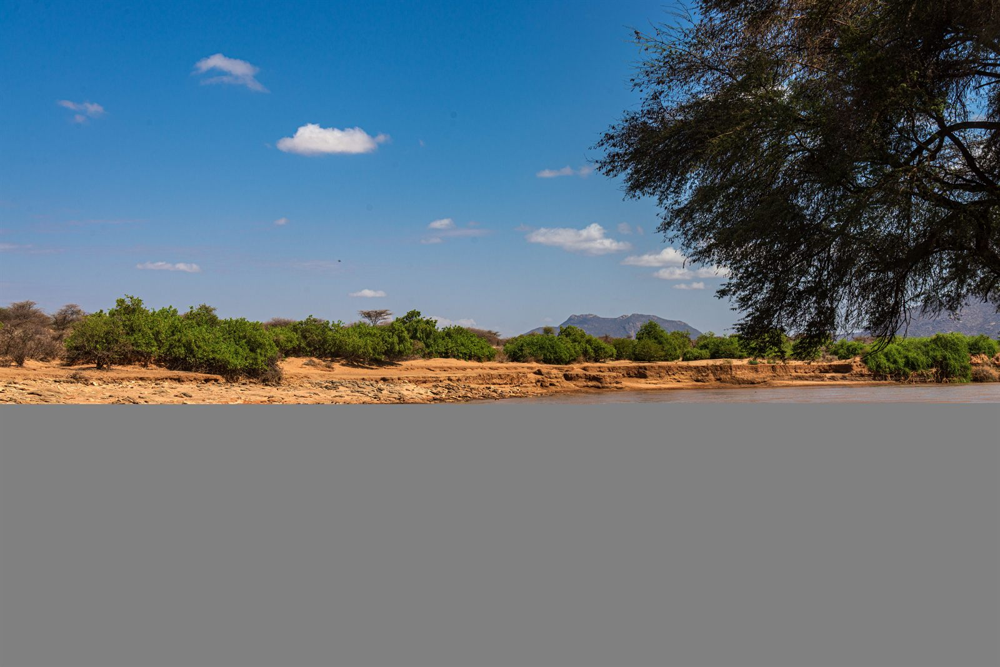
Samburu · Northern Kenya
A traditional Samburu manyatta, four kilometres from the Ewaso Ng'iro. Stay with the people who know it — and see Kenya as it is lived.
Welcome
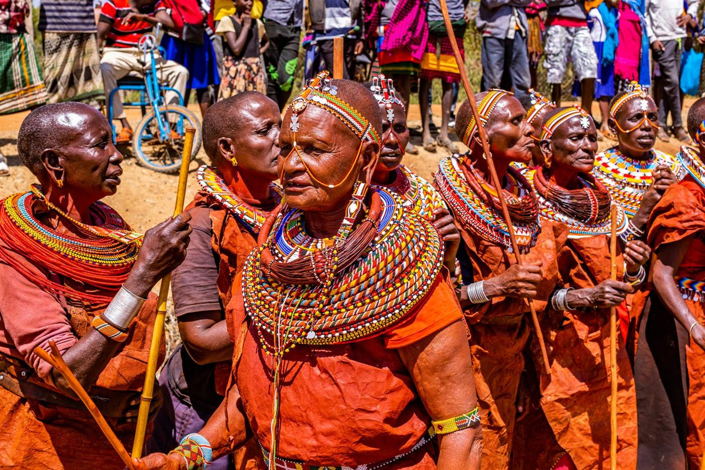
Mayian Explorers Campsite sits in the heart of Samburu, northern Kenya, right in the middle of a traditional Samburu manyatta.
Here you get a true, authentic experience of nomadic pastoralist life — from the village, to how our people live in harmony with their livestock.
We are located just four kilometres from the Samburu National Reserve, home to the Big Five and the famous Samburu Special Five. At Mayian we embrace conservation, especially of the big cats. Our camp is led by one of the best professional Samburu guides — a lion expert and National Geographic Explorer, featured in The Pride of Samburu.
Explore the Blessed Land.
Activities
Nothing staged. You join the rhythm of the manyatta and the reserve — on foot, at dawn, and by the fire.
Guided nature trails through the dry thorn scrub, with lilac-breasted rollers, hornbills and glossy starlings moving between branches.
Guided nature trails
Step inside the manyatta with Samburu hosts — beadwork, cattle, and the daily life of a nomadic pastoralist family.
Traditional manyatta experience
A trek up the rocky ridges of the Mathews Range, to the summit at Sapache where the plains meet the sky.
Mathews Range · Sapache
The Journey
From the first cowbell at dawn to the last song under the stars.
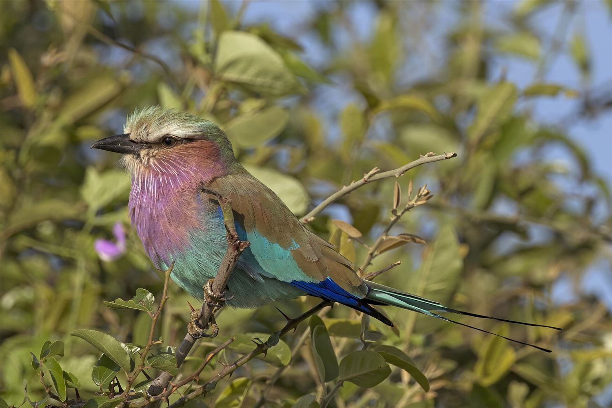
Lilac-breasted roller · dawn walkThe day began with the soft chime of cowbells and the gentle lowing of cattle — the lifeblood and wealth of the Samburu people. Guests at Mayian woke early, stepping out of their tents to join the village elders and herders.
Guided by local Samburu hosts draped in brilliant crimson shúkàs and intricate beadwork, visitors walked through the thorny acacia enclosure — the kraal — of the manyatta. They watched as young herders carefully tended their livestock, learning how milk and blood sustained generations through drought and bloom, and how a deep respect for the land dictated every seasonal migration.
Just a short walk from camp lay the pristine wilderness. With binoculars in hand, guests joined an early morning bird walk.
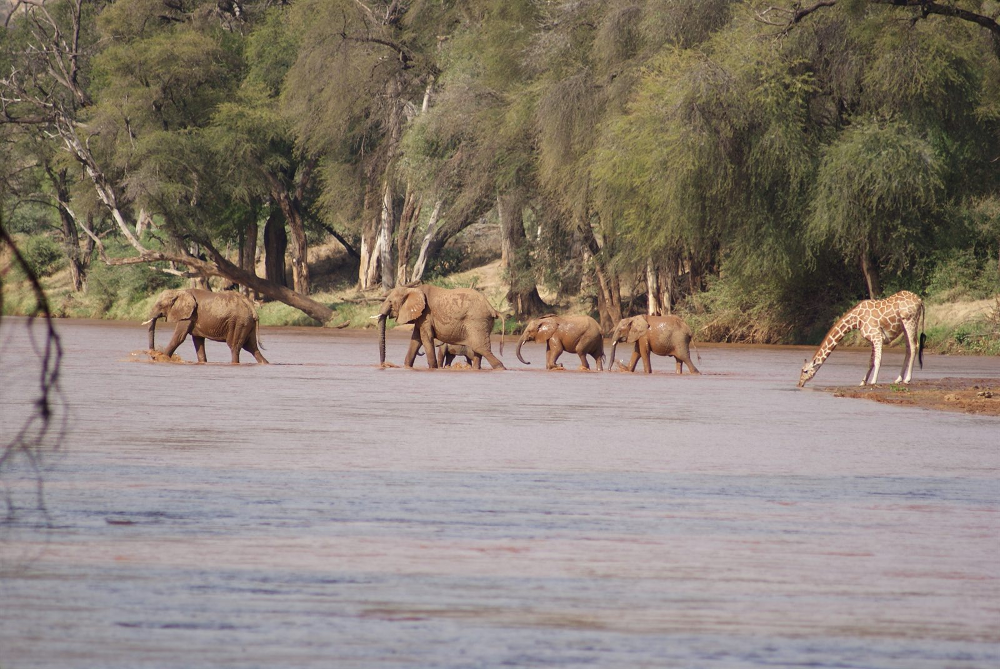
Ewaso Ng'iro · 4 km from campJust four kilometres away lay the famed Samburu National Reserve, a sanctuary like no other. Leaving the manyatta behind, the safari vehicle wound its way toward the Ewaso Ng'iro River.
Samburu was famous for the “Big Five,” but it was the Samburu Special Five that truly held the crowd spellbound:
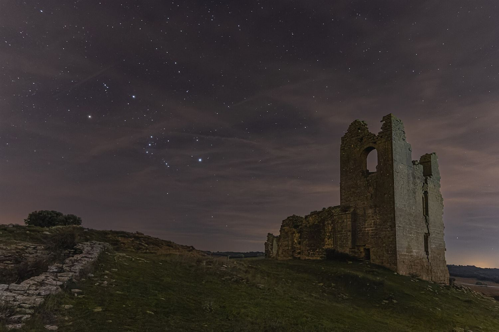
Fireside · an ocean of starsAs afternoon turned to evening, the true heart of Mayian's conservation mission took centre stage.
Around a crackling campfire under an ocean of stars, guests gathered around a remarkable figure: a local Samburu lion expert and National Geographic Explorer. Featured in the renowned documentary The Pride of Samburu, he had spent years bridging the gap between ancient pastoral traditions and modern wildlife protection.
As sparks danced into the night sky, he shared gripping stories from the field — how local communities learned to protect the big cats rather than fear them, and how individual lions were tracked and named, transforming ancient predators into neighbours.
The conservation story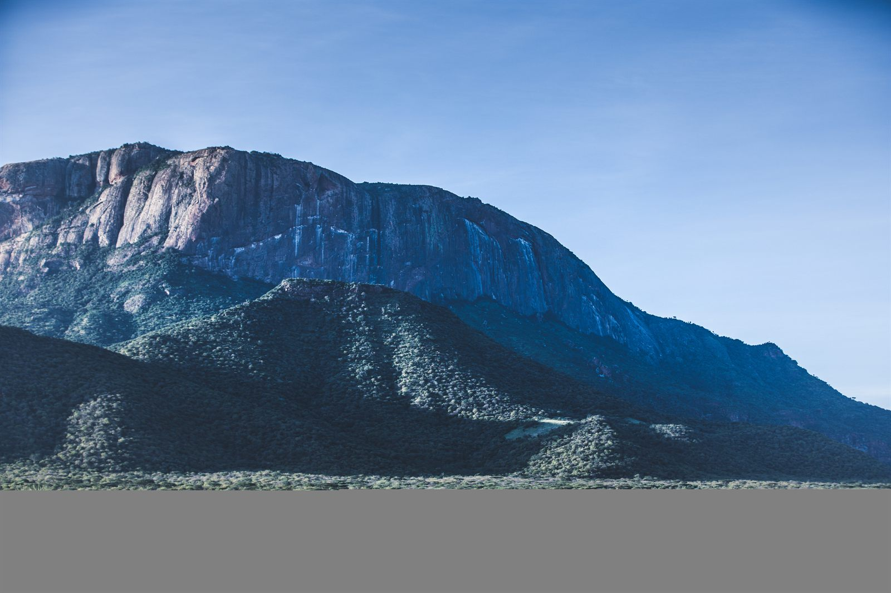
Ololokwe · the blessed mountainThe adventure reached its crescendo on the final day with a trek up the nearby rocky ridges. From the summit, the vista stretched endlessly — from the winding river below to the distant horizon where the Samburu plains met the sky.
Returning to camp as dusk settled, the community gathered to celebrate with traditional Samburu songs and high-jumping dances, the Adumu. The rhythmic chants echoed against the hills, carrying the energy of a culture that thrives in harmony with nature.
As night fell over the manyatta, guests lay back under the canopy of stars at Mayian Explorers Campsite, knowing they hadn't just visited Kenya — they had lived it.
The Special Five
Samburu's dry-country specialists — a field guide to the animals that make this reserve unlike any other.
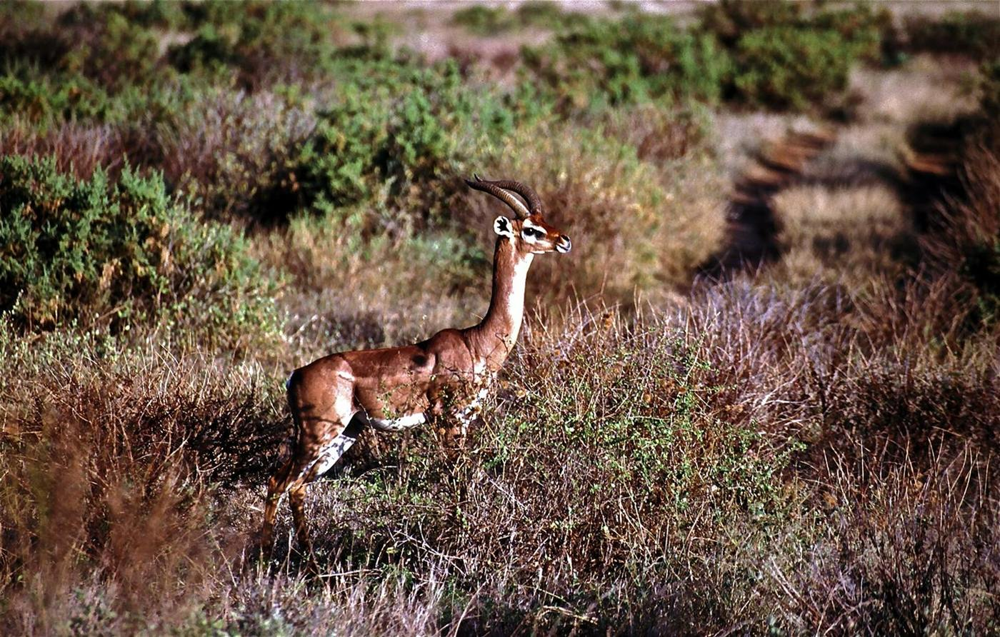
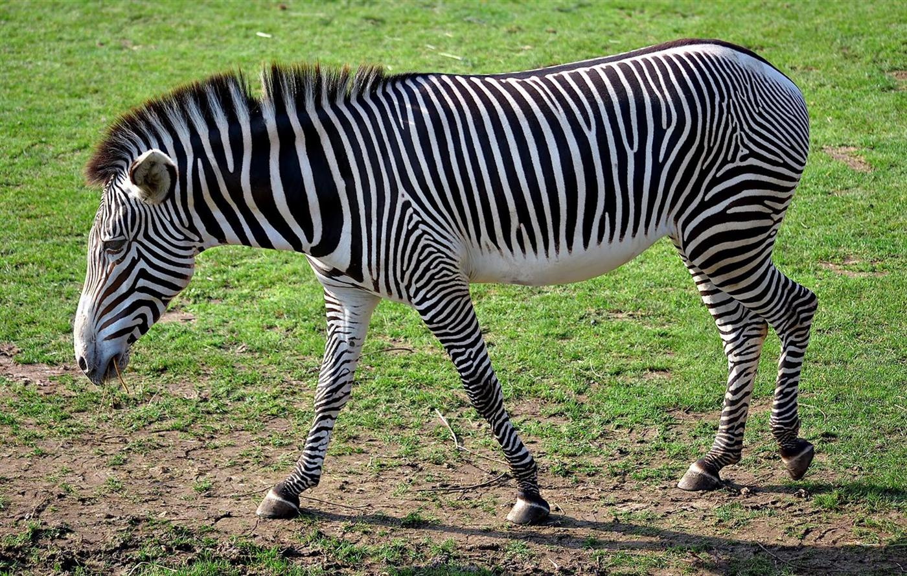
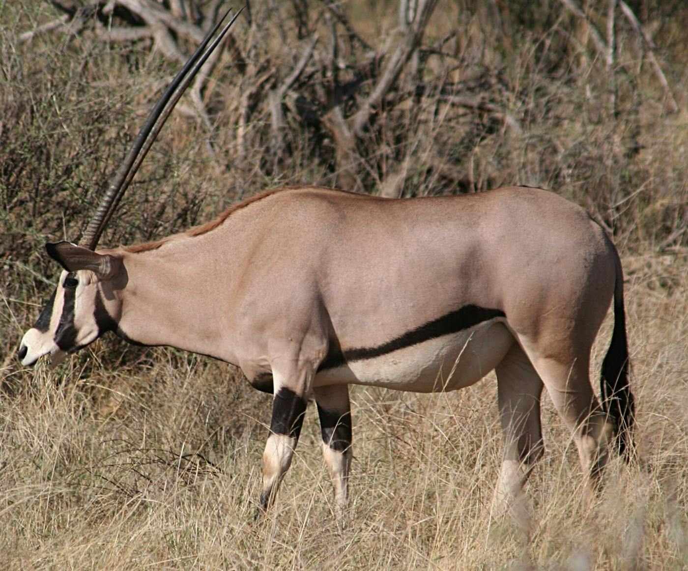
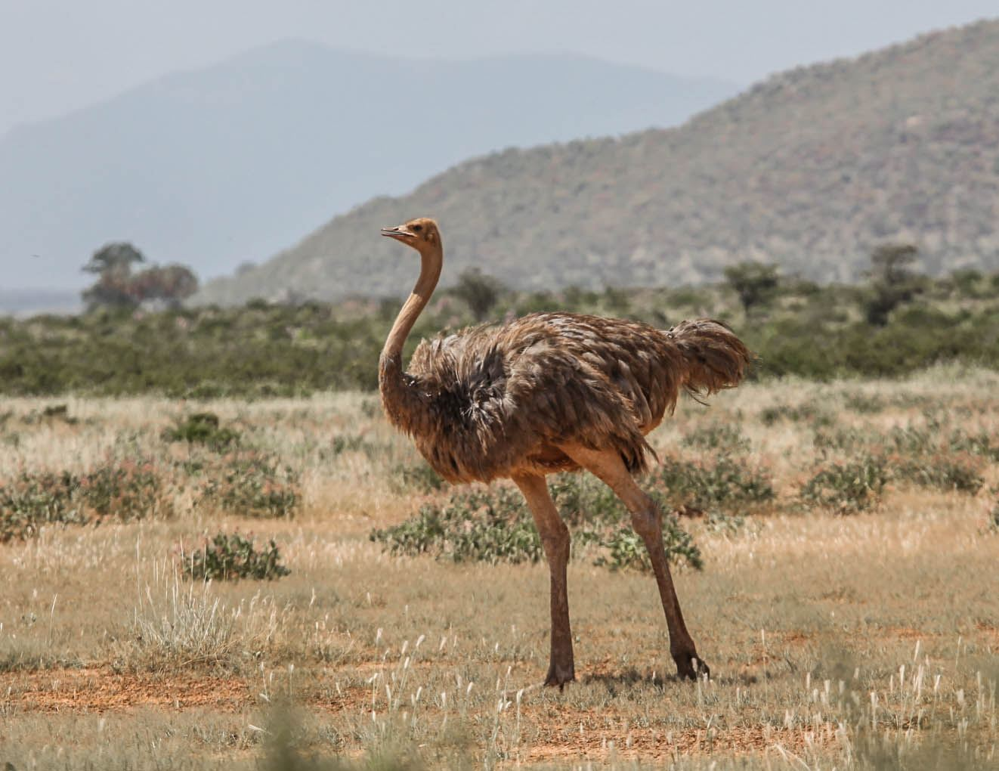
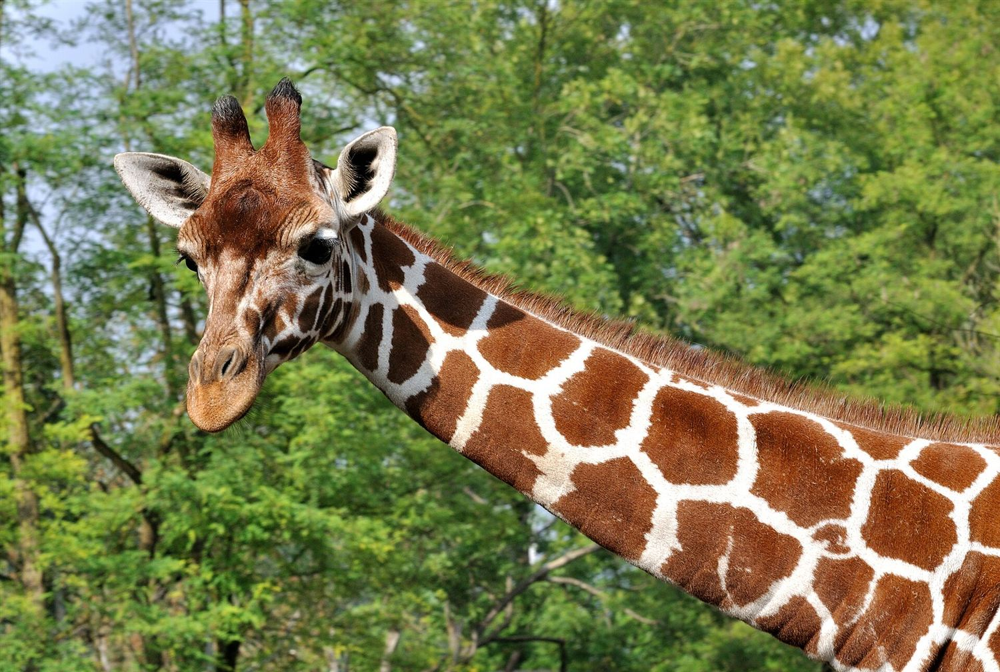
Conservation
“He shared how individual lions were tracked and named — transforming ancient predators into neighbours.”
At Mayian we embrace conservation, especially of the big cats. Our camp is led by one of the best professional Samburu guides — a lion expert and National Geographic Explorer featured in The Pride of Samburu.
His work bridges the gap between ancient pastoral traditions and modern wildlife protection: communities learning to protect the big cats rather than fear them, and guests leaving with a profound appreciation for the fragile balance between human and lion.
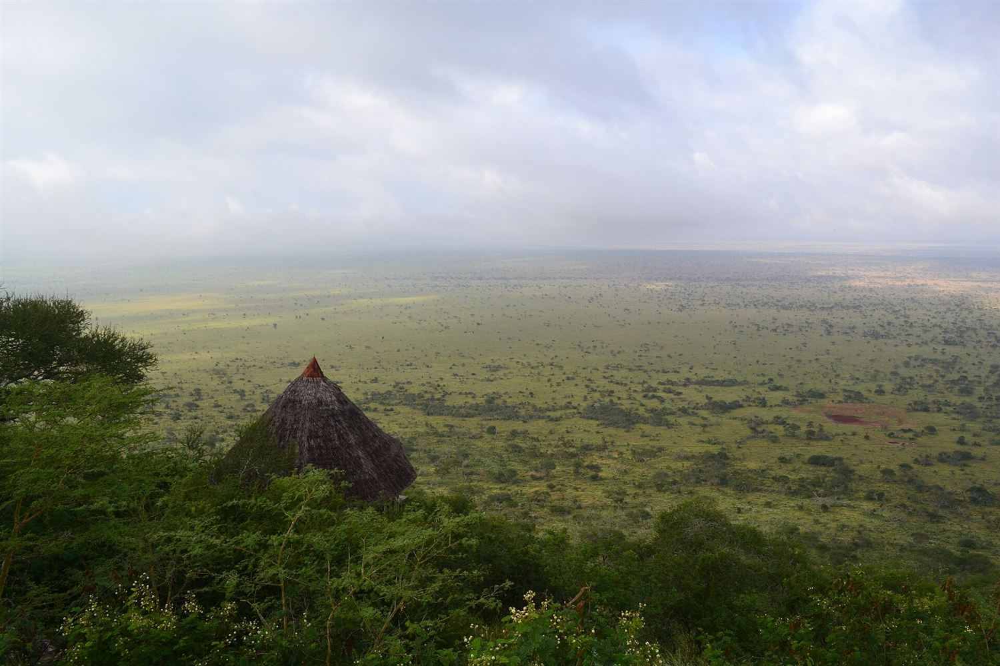
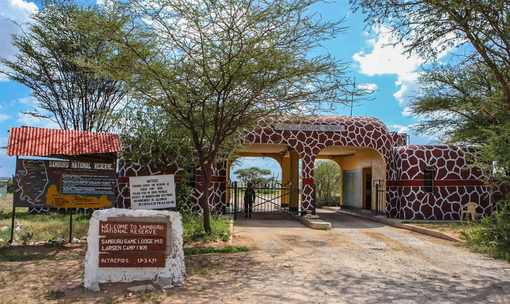
The Camp
Tents inside the manyatta. Cowbells at first light. The herd moving out, and the day opening with it.
You are a guest of the village, not a spectator to it. Evenings end around the fire; mornings begin with elders and herders. The wilderness starts a short walk from your tent.
Book direct
Book on WhatsApp and we'll help you plan the drive from Nairobi, the days in the reserve, and the evenings by the fire.